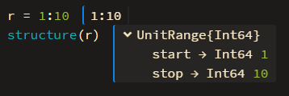

The Juno.jl Front-End
Juno provides some functionality using Atom's UI, which will usually have a fallback for use in other environments.
The isactive() function will provide an interface for figuring out whether the current session is running within Juno:
Juno.isactive — Function.isactive()Will return true when the current Julia process is connected to a running Juno frontend.
Enhanced Display
Juno.jl includes features which allow package developers to created enhanced displays in Juno.
For example, we can print provide structured display for arbitrary objects (similar to Base.dump)

Juno.structure — Function.structure(x)Display x's underlying representation, rather than using its normal display method.
For example, structure(:(2x+1)) displays the Expr object with its head and args fields instead of printing the expression.
Profiler
Profiles collected by @profile can be displayed as a flame chart (similar to ProfileView.jl) inside of Juno by calling Juno.profiler(). Juno.profiletree() will display the stack trace similar to the output of Base's Profile.print(). There's also a @profiler macro which does the same as @profile but also displays the collected information as a flame chart and clears all collected backtraces beforehand.
Juno.profiler — Function.profiler()Show currently collected profile information as an in-editor flamechart.
Juno.profiletree — Function.profiletree()Show currently collected profile information in tree-form. Falls back to Profile.print().
Juno.@profiler — Macro.@profilerClear currently collected profile traces, profile the provided expression and show it via Juno.profiler().

Clicking on one of the boxes in the profile view will take you to the corresponding file/line. The length of the lines in the editor correspond to the percentage of calls made in that line; to clear the profile view and the in-editor display, click the Forget Plot button in the profile view toolbar.
Progress Meters
Juno.jl allows package developers to use the progress bar which is provided in the Atom window. For example, you can easily show a progress meter for a for loop or a comprehension via the command:
@progress for ...
The following functions provide this interface:
Juno.@progress — Macro.@progress [name="", threshold=0.005] for i = ..., j = ..., ...
@progress [name="", threshold=0.005] x = [... for i = ..., j = ..., ...]Show a progress meter named name for the given loop or array comprehension if possible. Update frequency is limited by threshold (one update per 0.5% of progress by default).
Juno.progress — Function.progress(f::Function; name = "", msg = "")Evaluates f with id as its argument and makes sure to destroy the progress bar afterwards. To update the progress bar in f you can call a logging statement like @info or even just @logmsg with _id=id and progress as arguments.
progress can take either of the following values:
0 <= progress < 1: create or update progress barprogress == nothing || progress = NaN: set progress bar to indeterminate progressprogress > 1 || progress == "done": destroy progress bar
The logging message (e.g. "foo" in @info "foo") will be used as the progress bar's name.
Juno.progress() do id
for i = 1:10
sleep(0.5)
@info "iterating" progress=i/10 _id=id
end
endIt is recommended to either use the @progress macro or the
progress(name = "Foo") do p
endnotation to ensure that the progress bars are properly unregistered in the frontend.
Interaction
Juno.jl lets package developers interact with users via the Atom frontend. For example, you can allow the user to select from a list of options:
Juno.selector — Function.selector([xs...]) -> xAllow the user to select one of the xs.
xs should be an iterator of strings. Currently there is no fallback in other environments.

or send an OS-level notification:
Juno.notify — Function.notify(msg)Display msg as an OS specific notification.
Useful for signaling the end of a long running computation or similar. This disregards the Notifications setting in julia-client. Falls back to info(msg) in other environments.
You can also use
Juno.syntaxcolors — Function.syntaxcolors(selectors = Atom.SELECTORS)::Dict{String, UInt32}Get the colors used by the current Atom theme. selectors should be a Dict{String, Vector{String}} which assigns a css selector (e.g. syntax--julia) to a name (e.g. variable).
for querying the currently used syntax colors in Atom (and generate a plot theme or an OhMyREPL syntax theme from that).
The console can be cleared with
Juno.clearconsole — Function.clearconsole()Clear the console if Juno is used; does nothing otherwise.
or Ctrl-J Ctrl-C.